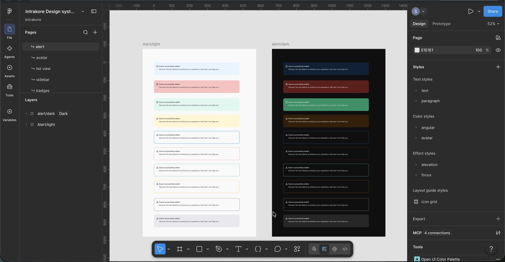
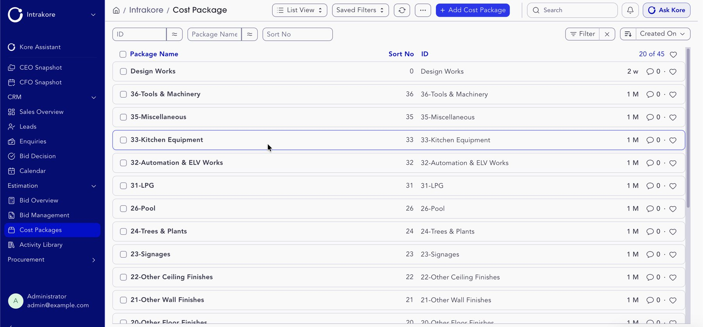
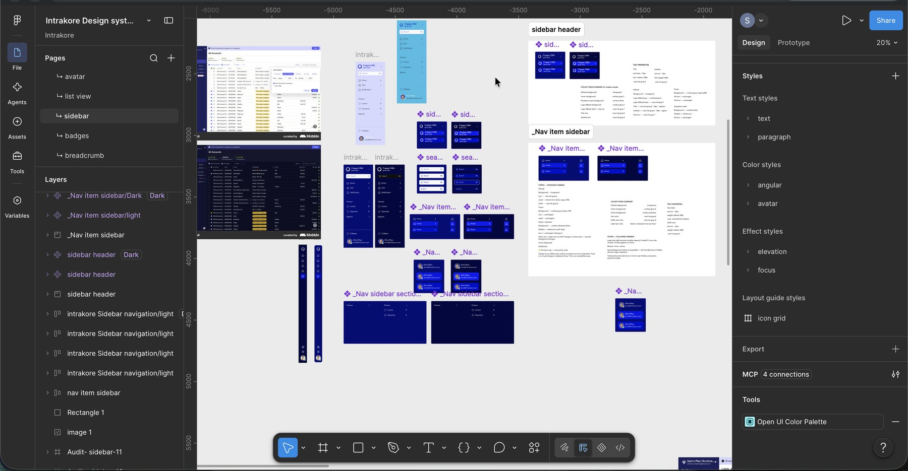
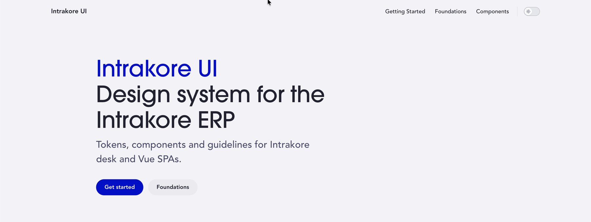

Intrakore: one design system for a construction ERP
I designed and engineered one design system for Intrakore, a construction ERP built on Frappe V16. It runs from hand-built Figma colour ramps to two shipped component libraries and a desk-wide theming app that every module inherits.
Design Engineer, Design Systems
Frappe V16 ERP, 23 apps
Foundations, token architecture, Figma library, Vue component library, native JS port, desk theming app, accessibility fixes, governance and docs site. I designed it and shipped the code.
Developers built module dashboards and backends and handled deployment. I set the system they build on, reviewed their pages against it, and rebuilt one dashboard as the reference.

One design system for a 23-app construction ERP.
- The problem: 23 apps that looked like several, with no shared rules.
- What I did: built the colour ramps and 114 design tokens in Figma, shipped 25 Vue components and a native JS version, and a theming app every module inherits.
- The result: all 23 apps run on one system in light and dark mode, and one root-cause fix restored brand fonts and dark mode product-wide.
Teams needed one product, but got 23 apps that looked like several.
Teams across sales, estimation, procurement, projects, site execution, finance, HR, QC and HSE spend full workdays in Intrakore's dense lists, forms and reports.
- No system. Colour and type were spread across Frappe SCSS, Bootstrap Sass variables, Vue components and inline JavaScript.
- Parallel drift. Developers built dashboards side by side, each with its own fonts, colour copies and dark-mode selector.
- A live product. The ERP runs 23 custom apps on a shared core, so nothing could break while the system went in.
Drift versus intentional variation.
Before designing anything, I audited where styling actually lived and which differences were bugs versus decisions.
| Surface | What I found | Call |
|---|---|---|
| Frappe desk SCSS (50+ files) | Hardcoded hex, raw gray primitives, Sass variables | Drift: replaced with semantic tokens |
| Sales Cockpit | Off-brand fonts (Jost, Nunito), 11 wrong dark-mode selectors | Drift: re-aliased to global tokens |
| Commercial Space | Off-brand fonts (Jost, Work Sans, JetBrains Mono) | Drift: re-aliased to global tokens |
| Estimation Space | Correct values, but copied, not wired | Debt: flagged for token aliasing |
| AR Dashboard | Hardcoded Inter | Drift: logged |
| Module accent colours | Per-module themes proposed early | Intentional, then dropped: one system for all apps |
The rule that came out of it: a difference is allowed only if it carries meaning, such as a status colour. Everything else resolves to a token.
Hand-built ramps, layered tokens: developers choose by purpose, never by hex.
Palette. Four families of 11 stops each: Blueprint (primary), Dusk (secondary), Clearing (tertiary) and a brand-tinted neutral. Plaster and Iron are the near-white and near-black.
- Ramp consistency over the literal brand value. The primary token is #000FCC, not the brand's #000FCE, so each step of the ramp reads evenly.
- A neutral with brand DNA. The gray's hue, 240°, splits the difference between Blueprint (236°) and Dusk (247°).
- Curves, not flat values. I smoothed saturation gaps in Dusk and Clearing and a lightness jump in the neutral.

Three tiers. Primitive → Semantic → Component. The semantic layer is named by role: ink for text, surface for backgrounds, outline for borders. That gives 114 semantic tokens.

A brand change edits primitives only; semantic and component tokens follow automatically.
Type. ITC Avant Garde Gothic Pro for headings of 28px and up, and Avenir for UI text. Regular weight is set to 420 to match Avenir Book.
Tuned with its own ramp, not inverted.
- Rejected the brand's dark colours. Sky and Mist were tested and dropped because they made the sidebar look wrong. Dark mode uses lighter Blueprint and Dusk stops instead.
- One selector everywhere. Every app uses
[data-theme="dark"]. I found and fixed 11 wrong selectors in one app alone. - Tokens that flip are watched. A Toast built on
surface-blueprint-9flipped to a pale tint in dark mode, so I pinned its background.

Two runtimes from one token set, because Frappe desk pages can't run Vue.
- Vue library (intrakore-ui, npm). 25 components: forms, tables, navigation, charts, calendar, feedback and a dashboard card header. I re-synced 22 of them against the latest upstream frappe-ui, keeping every brand token and swapping out broken upstream token classes.
- Native JS library (IK_Components). About 28 components for desk dashboards, including nine ECharts chart types, lazy-loaded only on pages that draw a chart. Each one is documented in COMPONENTS.md and has its own guideline.
One rule across every component: gray at rest, Blueprint on interaction. Here it is on the outline button:
| State | Treatment |
|---|---|
| Rest | outline-gray-4 border, white surface |
| Hover | outline-blueprint-3 border, no fill |
| Press | outline-blueprint-4 border, 1px outline-blueprint-1 ring, no fill |
| Focus (keyboard) | 2px Blueprint ring |
| Focus (after click) | 1px Blueprint ring, never the default grey |

Status has meaning, not decoration. KPI cards use a fixed tone ladder: red for overdue, amber for due soon, Blueprint for upcoming, green for all clear.

Contrast and focus: where an ERP people use all day fails first.
- Contrast-checked ramps. I tested ramp stops against WCAG AA on white. Blueprint 500 (#5763FA) fails for text, so text and controls use darker stops.
- Keyboard focus that shows, mouse focus that doesn't nag. Frappe's Bootstrap styles plain
:focus, so every clicked button kept a grey ring. I split it: a 2px Blueprint ring on keyboard focus (:focus-visible) and a 1px ring after a click. - Focus visible in dark mode. The focus token resolved to #000B99, a navy that disappears on a near-black background. I moved dark-mode rings to outline-blueprint-4 across buttons, fields and the shared
--focus-default. - Kept what upstream removed. When an upstream frappe-ui update deleted a component's focus ring, I restored it instead of matching upstream.
Not yet covered: reduced motion, a screen-reader pass and right-to-left (Arabic) layout. The library uses fixed left/right spacing today, so RTL is a real next step.
One plug-and-play Frappe app themes the whole desk.
I packaged the system as a Frappe app (intrakore_ui) that themes the desk from source SCSS, so all 23 apps inherit it with no per-app overrides.
Along the way I worked inside real engineering limits. Bootstrap Sass variables can't take CSS variables because Bootstrap edits them at compile time. Colours set by JavaScript at runtime can only be fixed in the script. And the build order decides which stylesheet wins.
The bug that proved the system
Brand fonts and dark mode were missing across the whole desk.
I read the live token values in the browser console. They didn't resolve at all.
The stylesheet hook in hooks.py was commented out, so the colour and type tokens were never compiled or loaded.
I created a proper SCSS bundle, enabled the hook, added @font-face declarations and filled in the missing dark-mode text tokens.
One root-cause fix restored fonts and dark mode product-wide.
The system only counts if teams build on it.
I set rules, measured where they held and rebuilt one page as proof.
| Adoption, measured | Result |
|---|---|
| Apps inheriting the desk theme | 23 of 23 |
| Desk SCSS files moved to semantic tokens | 50+ |
| Dashboards re-aliased to global font tokens | 2 (Sales Cockpit, Commercial Space) |
| Reference dashboard rebuilt on shared components | Payables Overview: tokens only, no hex values |
- Rules. I wrote guidelines for the shared dashboard patterns (header, cards, avatar and badge, search, dropdowns, date pickers and uploads), plus a COMPONENTS.md reference in the repo.
- Triage. Every page review sorts issues three ways: a global token bug, which I fix; a field configuration issue, which goes to the PM; and a custom doctype with no token coverage, which is flagged before anyone fixes it.


One set of tokens, three places.
One Figma master library, with light and dark variable modes, publishes to the product files. The same tokens drive the Tailwind preset in the Vue library and the CSS variables in the desk app.
The docs site, built in VitePress, gives every component an interactive playground with a live preview, option controls and a copyable snippet. Demos use construction-themed copy so they read like the product. It goes to the team through a reviewed pull request.

I'm a designer who ships production code, with Claude as my engineering partner.
- What I built: both component libraries, the desk theming app, token fixes in production repos, the accessibility fixes and the docs site.
- How: Claude helped me read unfamiliar framework source, trace build and compile issues, and write and refactor components. I verified every change live in the browser console and shipped it through tickets, branches, PRs and CI.
- What stayed mine: the ramps, the token architecture, every design decision, scope calls and the review of every change.
- Why it matters: there was no handoff gap. I didn't pass specs to developers; I shipped the system.

One system, 23 apps, light and dark.
- One system powers 23 apps, in light and dark mode.
- 25 Vue components and about 28 native JS components run on the same 114 semantic tokens.
- 50+ desk SCSS files moved from hardcoded values to tokens.
- One root-cause fix restored brand fonts and dark mode product-wide.
- Keyboard focus is visible in both modes.
Four things I'd change.
- Test every interactive token on both backgrounds first. The dark-mode focus rings taught me that a token can pass in light mode and vanish in dark. Now each one is checked in both modes before it ships.
- Publish shared patterns before the first dashboard. Guidelines written early prevent drift; guidelines written late only clean it up.
- Plan the token scale and the ramp together. Fixing the number of text steps before building the ramp avoids duplicate steps.
- Build for right-to-left from the start. Logical spacing properties cost nothing on day one and a full pass later, which matters for an Arabic-speaking market.
Next case study
Tasheel Post →